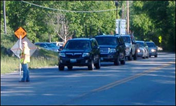
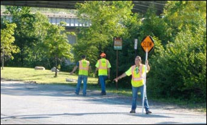

Are You a Distracted Driver?
July 15, 2008 accident on EB Hwy 40 just West of Hwy 270
This Distracted Driving incident caused three deaths and 15 injuries.
It’s reported that the driver of the Freightliner truck said he reached across the dashboard to retrieve his cell phone and had opened it before realizing he was about to make impact with the first of 11 cars stopped in traffic.
The truck driver is quoted as saying, "After I hit the first car, I just remember holding the steering wheel and seeing cars going to my left and right."
The above driver, who had a clean record, could spend up to 12 years in prison for his distracted driving error.
Do not let this happen to you.
Safe driving requires 100 percent attention, not 50 percent.
Crash-free June
National Safety Council announces June as "Crash-free June" to call attention to the leading cause of injury death in America and at work:
"Motor vehicle crashes:"
- Driver behavior contributed to 90 percent of all motor vehicle crashes.
- Crashes solely caused by vehicle or external factors account for other 10 percent.
Key unsafe behaviors:
- Speeding - reduces time a driver has to avoid a crash and increases severity
- Aggressive - such as improper passing, weaving in and out of traffic, following to closely
- Distracted - concentrate on driving, not eating, talking on cell, grooming, etc.
- Drinking - contributing factor in 40 percent of all motor vehicle fatalities last year
- Drowsy - impairs judgment just like drugs and alcohol
- Failure to yield right of way - against the law
- Teenagers - leading cause of death for 15- to 20-year-olds - includes inexperience and immaturity, speed, drinking and driving, not wearing seat belt, distractions, peer pressure, underestimating risk
If you find yourself doing any of these behaviors, stop and think, is it worth the risk?
What's Wrong with the Picture?
Study the picture to see if you can identify any safety concerns?
See question one (1) on the survey questions and pick the best answer.
PPE: First or Last ?
PPE (personal protective equipment) is not the first thing we turn to; it’s the last line of defense against hazards.
After identifying the hazards for a specific job or task the first thing to do is try to eliminate them. For example, our asphalt plant personnel have to access various upper levels of the plant. Rather than have to adorn fall protection (PPE), they are constructing various walkways with guardrails. This is referred to as engineering out the hazard to eliminate it.
Another prime example is the I-64/40 highway project. What’s the first hazard that comes to mind when working on a highway? Typically, traffic. They completely closed the highway. They engineered out that hazard avoiding many traffic fatalities and injuries.
Of course, it is not always feasible to eliminate or engineer out the hazard. In those cases you turn to the last resort – PPE: Traffic safety vests for visibility; hardhats when working below structures; safety glasses to protect against flying objects; dust masks or respirators; earplugs; wide brim hats and sunscreen to name a few. It’s all available. We just need to use them, but only after it has been determined there is no way to eliminate or engineer out the hazard. Remember, even though you put on PPE, the hazard is still there.
Hello, We Are: Deborah Withington & Cheryl Brown
Deborah (l) and Cheryl (r) ready for work.
We are trained and dedicated flaggers for the company. We have been with West Contracting for three and four years, respectively. We both have had several flagger training courses - one sponsored by the company and an all-day course on Work Zone Safety-Flagging & Traffic Control for Construction, which we took on our own at the laborers training facility in High Hill.
Flagging, done properly, is no cake walk. Our lives, our fellow co-workers, the motoring public and even pedestrians and bicyclists lives depend on flaggers knowing what they are doing. Good communication is a major key to good flagging. Most of the time we are located where we do not have a visual of each other so we use two-way radios to let each other know when to let traffic pass and when to stop the traffic. Another factor is the material trucks. For them, we carry a hand-held CB unit to let them know when it is OK for them to enter the one-way traffic lane. Otherwise, disaster could easily occur.
For safety, as you can see in the picture, we always wear traffic safety vests as well as ample sun screen which we re-apply throughout the day. Two key rules to flagging include: never turn your back to traffic until you have them stopped and always leave yourself an escape route because motorists are very aggressive and very distracted these days.


Last Month's Questions
Best answers are bolded for your review below
- What’s wrong (safety wise) in the picture of the two men working on the flat roof?
- Lanyards aren’t attached to anything. (Although the workers have personal fall arrest equipment on, if it isn’t hooked up to a secure anchor point capable of supporting 5,000 pounds per employee, it’s the same as not having fall protection).
- No guardrail system or safety net system. (A guardrail or safety net system could be used to prevent falls form the roof).
- both a & b
- Charlie is planning to change a light bulb in the shop ceiling which is 14 feet above the floor. Charlie needs to incorporate some type of fall protection.
- True X False
- When a job calls for working at heights that require fall protection, the first line of defense is a Personal Fall Arrest System (PFAS).
- True False X